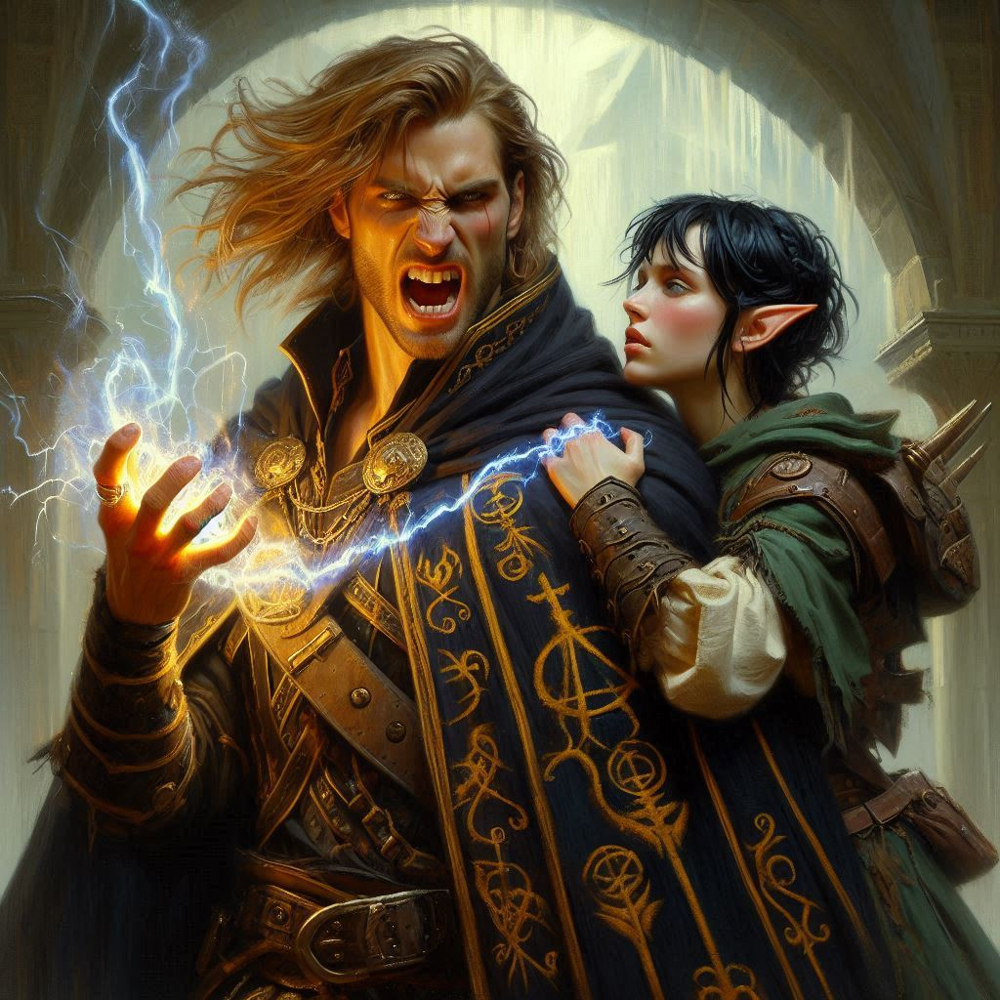
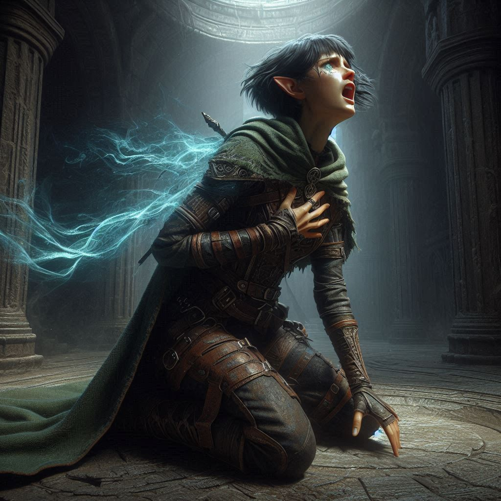
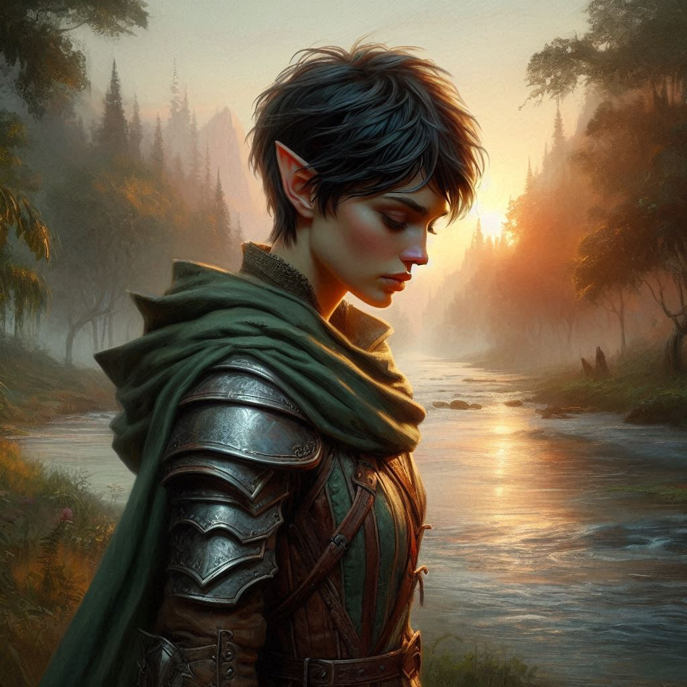

Ruin at Hemlock
You crouch silently on the edge of the cavern’s massive wall, your fingers aching from the tense grip you maintain on the jagged rocks. Below, a dreadful scene is unfolding. Varis—the dark elven Minister of Trade, a king in disguise—stands at the center of a glowing circle, his hands raised as he chants in a guttural tongue. The air around him shimmers, the magical portal he’s summoning ripples open with an ominous hum. Behind him, his dark elf mercenaries stand at the ready, their eyes gleaming with anticipation.
The cavern is massive, its walls stretching up toward the heights where you, Baider, Elias, and Princess Hawthorn cling to the shadows, waiting. A battle is coming, but this isn’t just any fight—it’s the final moment in a long, tangled web of betrayals, dark magic, and desperate choices. And right now, it all hinges on you.
Across the cavern, you spot him: Jorsh, the boy you once loved, the man who betrayed everything you believed in. He stands cloaked in shadows, his face hard and unreadable, his hands glowing with arcane energy as he prepares to cast another spell. You feel a surge of anger in your chest, memories of your time together flickering in your mind. He hasn’t changed—still seeking the treasure, still willing to betray anyone to get it.
You shake your head, pushing the memories away. This is not the time for doubt. You know what you have to do.
Your heart pounds as you silently scale the wall of the cavern, moving lower, inching your way closer to Jorsh. You cling to the rock face, careful not to make a sound, your breath shallow as you approach him from behind. The plan is simple—subdue him before he can do anything more to jeopardize the mission.
You reach out, fingers brushing the hilt of your dagger, its cool steel comforting in your grip. Just a few more steps, and you’ll be within striking distance. But suddenly, Jorsh’s head snaps to the side, his dark eyes locking onto yours in the shadows.
Shit.
You freeze, but it’s too late. He’s already raising his hand to cast a spell, dark energy crackling between his fingers.
"You're too late, Kira," he sneers, his voice cold and mocking. "This is bigger than you."
You don’t hesitate. With a growl, you spring forward, your dagger slicing through the air. You catch him off-guard, striking him in the shoulder. Jorsh grunts but doesn’t fall. Instead, he spins around, his hand raising in a swift motion as magic erupts from his fingers.
"Stop!" he yells, his eyes wild. "I'm here to stop Varis, not help him!"
The words hit you like a blow, but they make no sense. He’s the one who abandoned the town, the one who’s been chasing this cursed treasure. He’s the one who’s been consumed by dark magic, and now he’s claiming he wants to help?
Baider’s booming voice cuts through the tension from across the cavern. "Now’s not the time for this, Kira!"
You see him, Baider—your harsh but beloved foster father—charging into the fray with Elias and Hawthorn at his side. The three of them fight their way toward Varis, Baider swinging his heavy hammer with deadly precision, Elias darting in and out with his bow. Hawthorn, despite her royal status, proves herself a warrior, throwing spells of her own.
But your focus is still on Jorsh. You press the attack, closing the distance between you and the rogue sorcerer. You strike again, and again, but he’s fast, too fast, his magic deflecting your blows and forcing you back.
Suddenly, the air around you crackles, and you feel it before you see it—Jorsh’s magic, powerful and cold. His eyes gleam with dark intent as he thrusts his palm toward you.
A surge of energy strikes you square in the chest, and you gasp as everything goes dark.
Everything… fades.
You come to in an instant, but it’s too late. Baider’s body lies crumpled beneath the weight of a fallen pillar. His hammer is still in his grasp, but his eyes are lifeless. Elias, too, is gone, his form slumped over the edge of a shattered platform. And Hawthorn—Princess Hawthorn, who had tried so hard to fight back—lies motionless at the edge of the cavern, her body marked by the dark magic that Jorsh had unleashed.
"No!" you scream, your voice raw and desperate. The stone around you seems to shake as if the very cavern is mourning their loss.
But it’s not over. It’s only begun.
Jorsh steps forward, his face hard, his eyes unreadable as he locks gazes with you. "You should’ve believed me, Kira," he says softly. "I was trying to stop this. But now… it’s too late."
He turns, facing Varis, whose hands are still raised, the portal growing ever larger, its black edges creeping across the cavern floor like a living thing.
You stagger to your feet, your heart pounding in your chest. It’s all crumbling.
Varis sneers, looking over at Jorsh. "A wizard’s duel it shall be, then," he declares.
The two powerful sorcerers begin to chant, their words echoing through the cavern as magic flares between them. Fire, shadow, lightning—everything collides in a massive explosion of energy. You cover your face, the intensity of it blinding.
The cavern begins to crack, the walls shaking violently as the battle reaches its apex. You try to move, to run, to stop them, but the magic is too powerful. Stones fall, massive chunks of rock and debris hurtle through the air.
The entire cavern begins to collapse.
You make a split-second decision—climb. You scramble toward the tunnel that leads back to Hemlock Falls, your legs shaking, your heart in your throat. You can hear the sounds of the duel behind you, but you don’t look back. You can’t.
Chunks of stone crash around you, blocking the tunnel’s entrance as you push forward, desperate, barely escaping with your life.
The last thing you hear before the world goes silent is the collapsing of the cavern behind you, followed by the echoing screams of those who fought and failed.
A cool breeze blows your short hair out of your eyes. The sun is rising over Hemlock Falls. The river flows downstream toward Belladonna, the place of your childhood and the forge of your now broken dreams. It will take you a day or two to get there, maybe more in your battle-scathed condition. That’s good, you think as you start limping along the game trail near the river. It is going to take that long to clear your head and begin mourning the loss of your dear friends.